This project built on the mesh rendering we implemented in project 2, where now we utilize a pathtracing algorithm to add lighting to our models.
There are 5 parts total, where we iteratively build onto each onto to build more complex renderings that
have more advanced lighting techniques. We implemented core features of how path racing rendering
programs work and it is a physically based rendering technique that simulates light behavior for photo realistic images.
This works by casting rayss through each pixel and then averaging values to calculate hte final color. The values of the rays
are also from direct/indirect lighting so it looks lit or like a shadow.
This project has been rewarding too just because of how cool it is to see our renders work
and come to life. We deployed simple but powerful techniques and got insight on how modern
graphics may work. It was also satisfying to reduce computation times.
Our approach to this project was to really just focus on grabbing what we could from lecture and piazza, and luckily
the rubric was well defined on what we needed to achieve. However, due to small misunderstandings on the logic
and syntax errors, we did run into issues where it took hours to debug. For example, the longest
part we spent was BVH construction as we kept getting bad access errors or stack overflows (infinite recursion).
Part 1: Ray Generation and Intersection
In this part of the problem we started by defining how rays are generated relative to some camera, generating pixel samples, then looking to ray-triangle and ray-sphere intersections.
For the ray generation section, we needed to transform an image coordinates to some camera space then generate the ray and transform it into the world space. Taking in what we learned from the diagram below, we could narrow down where our point was using the code below. We are given the points of the camera and world space and we simply need to scale it appropriately.
float r_hFov = radians(hFov);
float r_vFov = radians(vFov);
float new_x = tan(.5 * r_hFov)*x - tan(.5 * r_hFov) * (1 - x);
float new_y = tan(.5 * r_vFov)*y - tan(.5 * r_vFov) * (1 - y);
direction = Vector3D(new_x, new_y, -1);
direction_transformed = (c2w * direction).unit();
Ray r = Ray(pos, direction_transformed);
r.max_t = fClip;
r.min_t = nClip;

In addition, this section required us to raytrace pixels. We created a basic function that calculates the average irradiance of a pixel and randomly sample (gridSampler->get_sample()).
For the triangle intersection algorithm, we used the Moller-Trumbore algorithm we learned in class to quickly and efficiently calculate our barycentric coordinates. From these coordinates, there was also a time we calculated that we could use to check if the ray interesected with during this time frame. We would then update the ray to the time accordingly and update the inersection appropriately. For the normal at the point of intersection, we multiplied the triangle normals out with the barycentric coordinates.
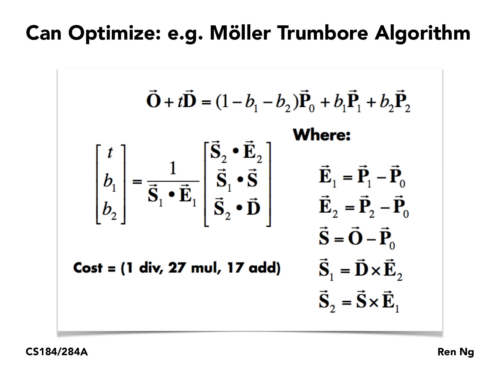
For the sphere intersection algorithm, similar to the triangle algorithm, we learned what we needed to do in lecture and used the following equations below. We used the quadratic formula and barycentric coordinates for this section. Since we using the quadratic formula, we ultimately get two equations (2 t values) and thus we only consider the closer t value.
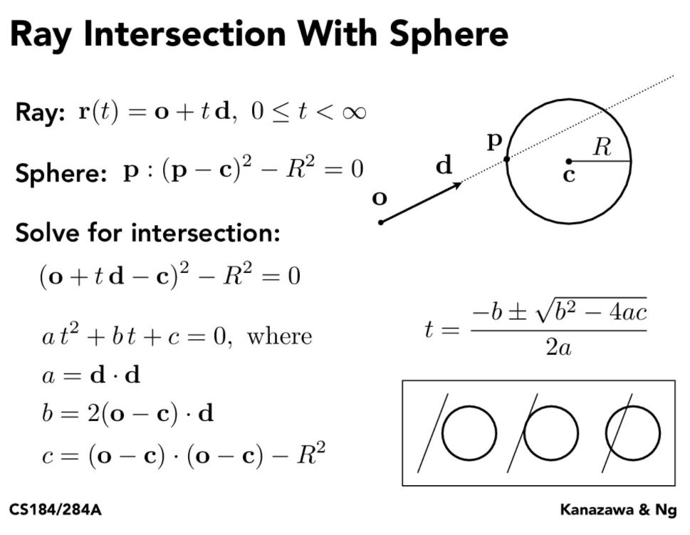
|
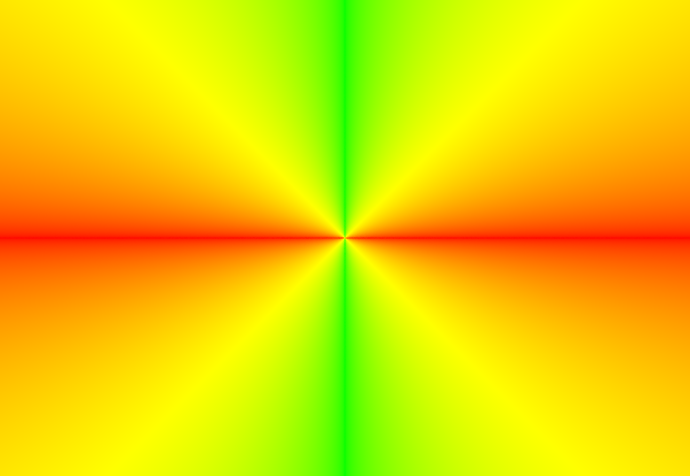
|
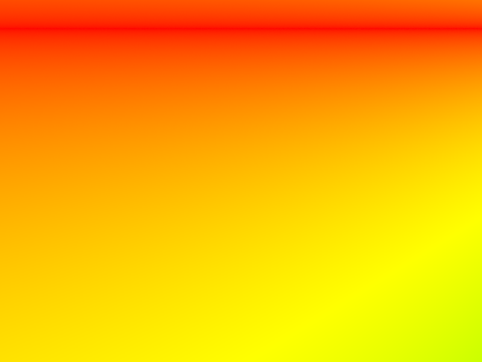
|
|
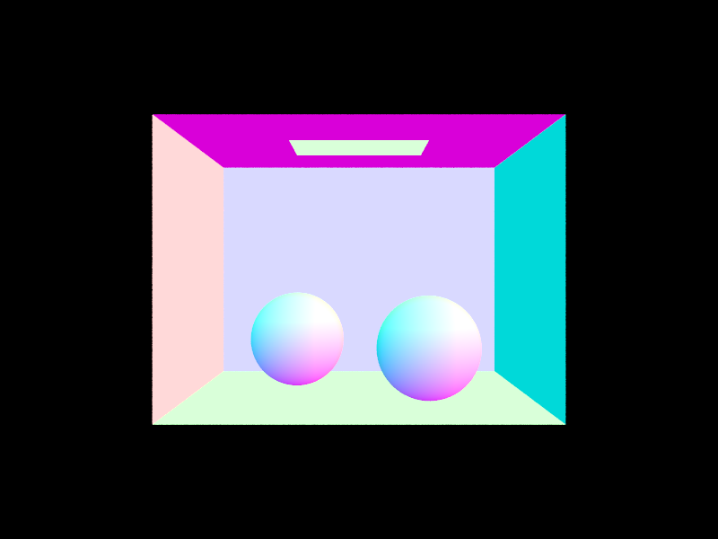
|

|

|

|
This part was challenging at first to gather all of the correct formulas and debug to make sure that the math checked out. In addition, we started off with a lot of syntax related errors that took us some hours to just debug through. One critical bug we ran into is that we didn't follow the triangle barycentric formulas closely enough (matched the normals incorrectly) and ended up with somewhat jagged gems and cow rendering.
Part 2: Bounding Volume Hierarchy
In this portion we implemented the BVH (bounding volume hierarchy) in order to optimize our rendering time. We were able to render some basic shapes and scenes, but having many more primitives made it much longer to render. This is because for every pixel and ray we did a linear scan of all primitives and their interactions; however, we can cut down on the number of scans. This structure works like a binary tree structure which stores primitive shapes' bounding boxes in the leaves. After constructing the BVH we implemented intersection methods that calculated which rays that intersected which primitives. After completing these, we were able to speed up rendering times from ~40 seconds (linear runtime) to less than 1 second (log n runtime).
BVH & Intersection Algrithms
Our BVH construction algorithm is as follows: in our base case we have less than max_leaf_size primitives (current node is the leaf node) we iterate through every primative from start to end, and include them in our bounding box. We return the leaf node to end the recursion. If the node is not a leaf, we want to recurse on the left and right subnodes, by splitting our vector of primitives into 2.
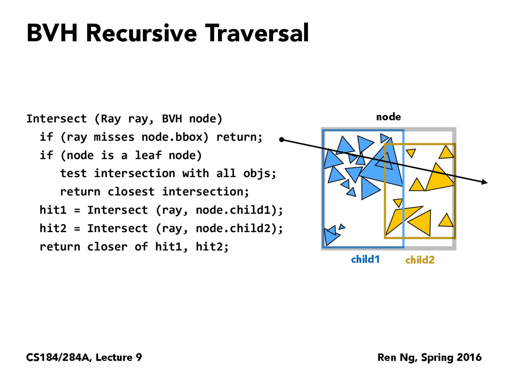
Our heuristic: In order to find the condition to break up the vector into roughly equal-sized paritions, we find the centroid point of the biggest dimention bounding box, and split accordingly with the
x,y,z coordinates. However, this leaves us with the edge case of a left or right vector having no primitives and will result in an infinite recursion. To account for this, we resplit the vector when this happens to ensure that both child nodes will have primitives.We also implemented
intersect of the bounding boxes and BVH nodes in this portion. We calculated the intersections using the equation:
t = ( p' - o ) / d
Using the t (time interval) we were able to check if it was a valid t0 < t1 , to see if it was indeed a valid intersection. For our BVH nodes, we quickly returned false if it did not intersect the bounding box, else we would return the closer intersection out of the left and right child nodes.
|
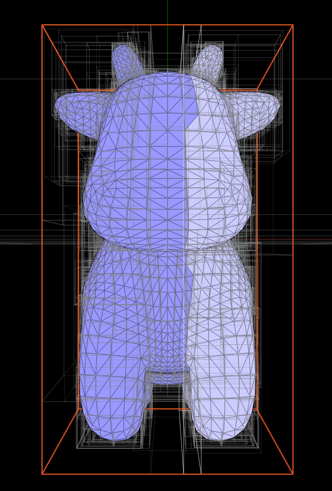
|
|
|
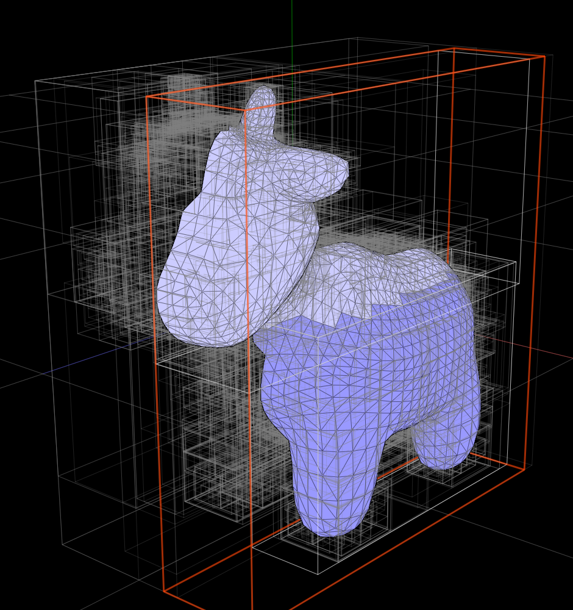
|
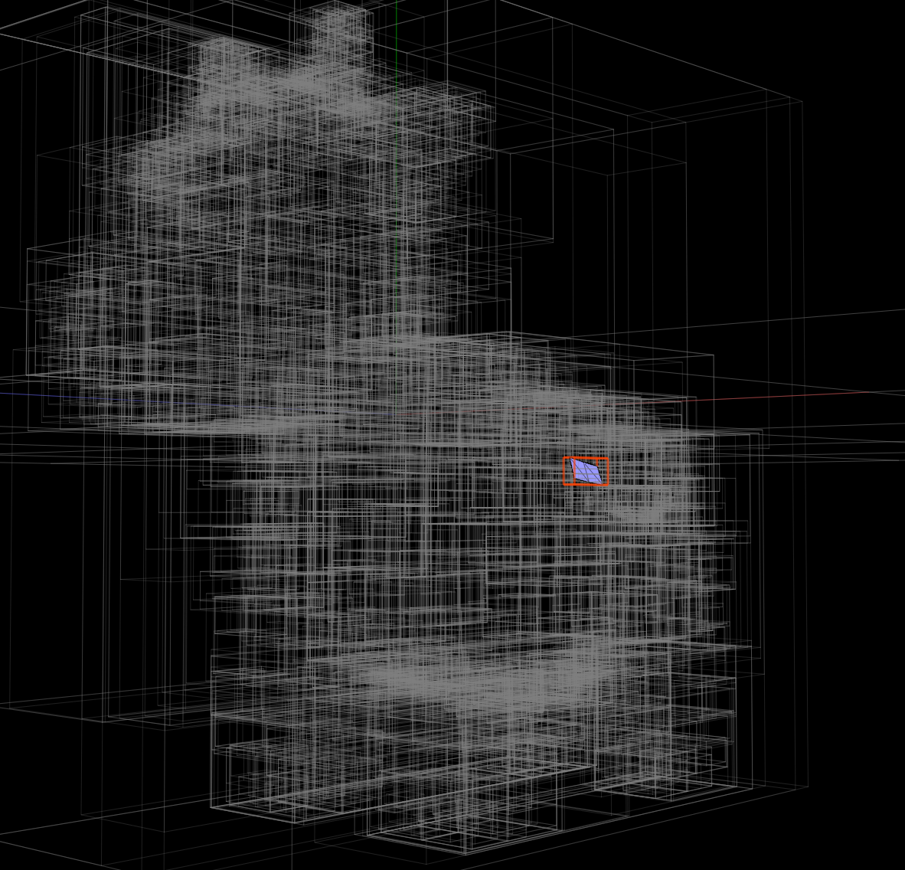
|
|
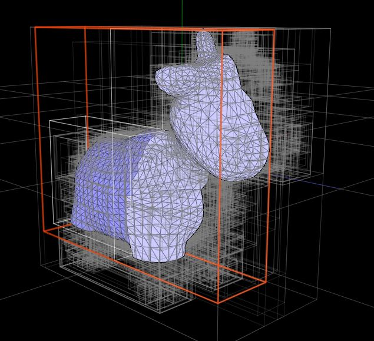
|
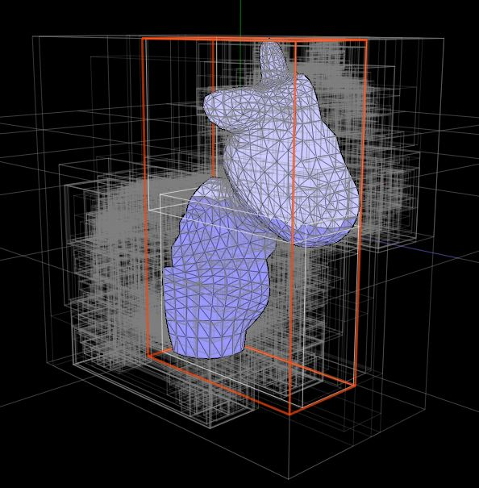
|
Below you can see our render time results, where the time difference is very significant (40 vs 0.5 seconds). For other images, we reduced the time significantly so we can actually render them. This speedup was at least 80x as seen by the cow rendering times on one of our computers. A BVH with a simple heuristic could make a really big difference for rendering times.
Cow.dae render times before
[PathTracer] Rendering... 100%! (40.5877s)
[PathTracer] BVH traced 454359 rays.
[PathTracer] Average speed 0.0112 million rays per second.
[PathTracer] Averaged 1332.342053 intersection tests per ray.
Cow.dae render times before after
[PathTracer] Rendering... 100%! (0.5392s)
[PathTracer] BVH traced 474623 rays.
[PathTracer] Average speed 0.8803 million rays per second.
[PathTracer] Averaged 7.325916 intersection tests per ray.
|
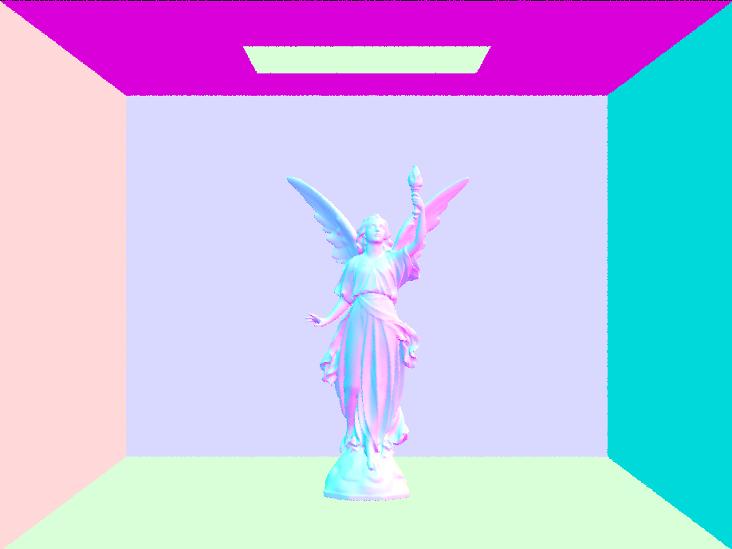
|
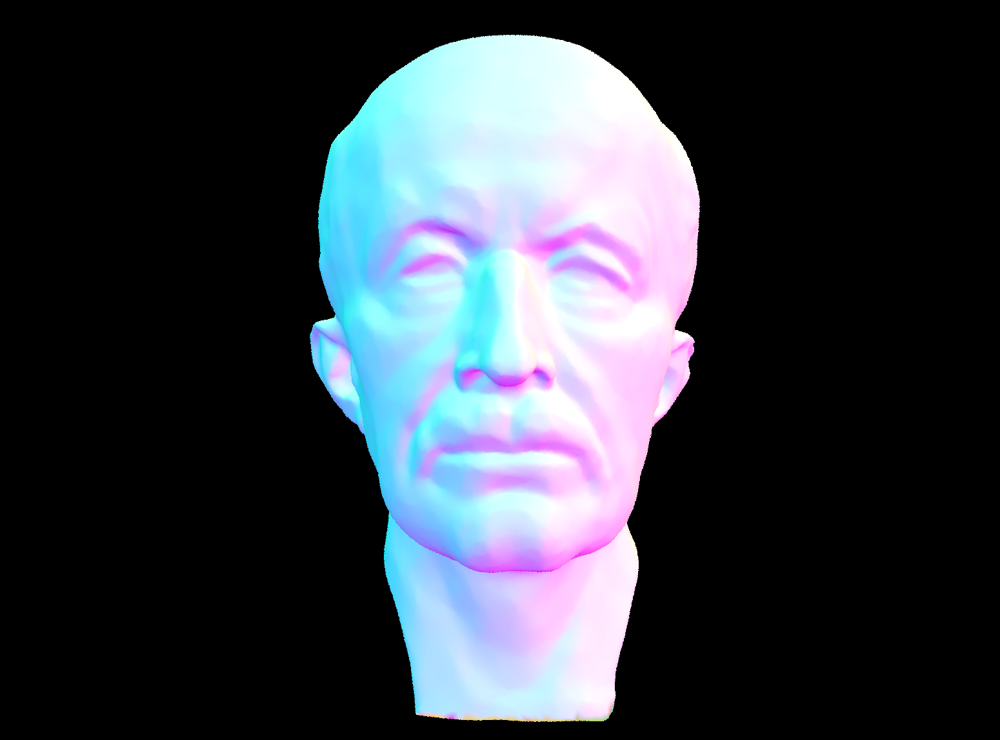
|
|
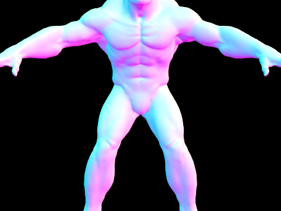
|
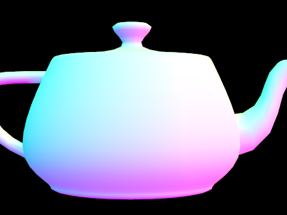
|
|
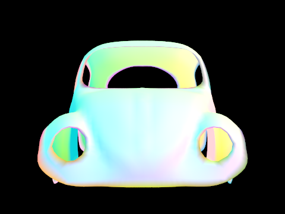
|
After implementing this, we were then able to render the scenes shown above extremely quick,
even on our own machines. We were only able to render the cow.dae and teapot.dae previosuly so there are no other renders for before BVH. For the teapot, the speed increase
was similar to cow.dae and the renders look the same. We ended up running into several debugging sessions related to our BVH structure and BBox intersection algorithm. One issue we had was pointer/memory deallocation, where creating a new std::vector failed in recursive calls. However we resolved this by trying various suggestions on piazza, andd ended up using std::partition to split up the primitives and get the new start and end iterators.
Part 3: Direct Illumination
In this section we developed two direct illumination techniques. This will help us make our renders much more realistic. We cast shadow rays and a point is lit up if its shadow ray would intersect with a light source. We first implemented zero-bounce illumination, but to add onto to this, there is direct lighting with uniform hemisphere sampling or importance sampling lights.
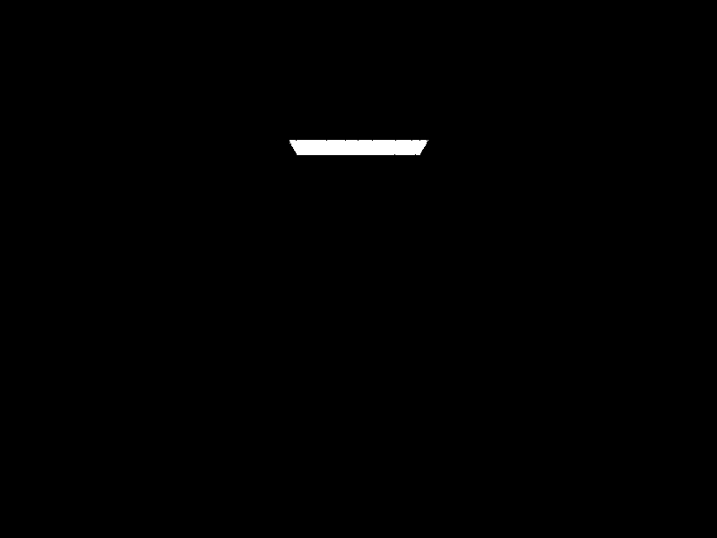
To start, we first filled in the two DiffuseBSDF functions in order to properly sample. We weight the illuminance arriving
at a single point by a surface reflectance to determine how much of it goes in certain directions. We only support
Lambertian surface in this part which diffuse surfaces at a constant value (albedo / pi).
The direct lighting function takes a ray and intersection and we exxtrapolate hit_p for this and w_out.
In the direct hemisphere lighting, our function takes uniform samples surrounding the provided
hit_p and computed the radiance. This part was straightforward to get the samples. We update our functions
to add one_bounce_radiance()'s value to get an estimate of the direct light. one_bounce_radiance() performs
our operation from the given num_samples times. Our operation consists of sampling from the hemisphere, then create an intersect
struct and shadow ray and test if the shadow ray interesects anything, and adding its value if it does multiplied
by the angle and reflectance. We then need to normalize by the pdf and num_samples after adding everything up.


|
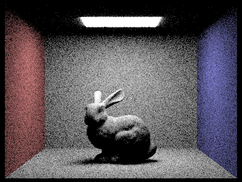
|
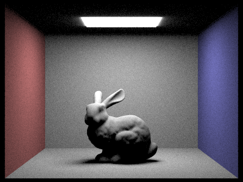
|
For the importance sampling direct lighting section we sum over the light source in the scene
and take samples from the radiance from every light's surface. This is less noisy than the hemisphere
lighting and solves the issue, but it is more computationally more intensive. This part was extremely
similar to the previous one so we were able to reuse a lot of the code. Ultimately, this technique is an option
because we can do better than hemisphere by sampling the light source directly.
Implementation wise, we loop through each scenelight and then we check if it is a light source or not (delta light func). If is is
a light source we can save time and not run through our algorithm, otherwise we start looping
for each sample. First, we get a sample from SceneLight::sample_L(), then create a shadow ray and check that it doesn't intersect anything,
and then start accumulating the light by multiplying against our weights like in the last section.
|
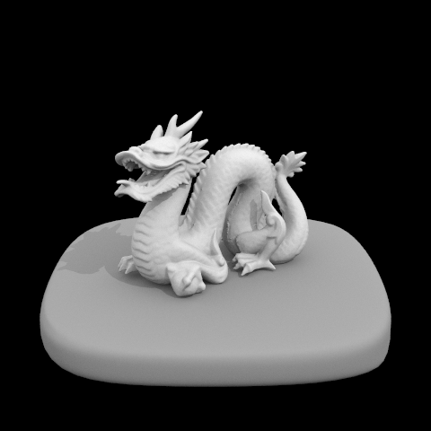
|
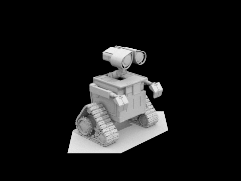
|
Below is a comparison of the two methods.
|
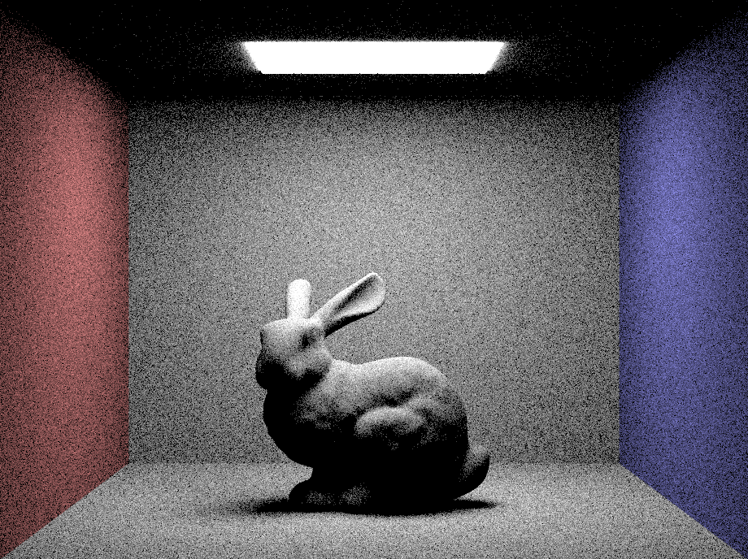
|
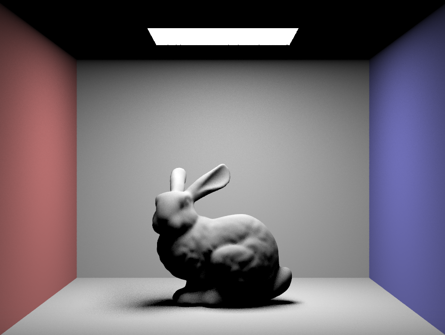
|
In the examples above we compare the results between hemisphere and importance sampling.
Overall, the hemisphere sampling was faster to render, but there is a big difference in quality. You can see that uniform hemisphere sampling is much more grainy, with black specs and noise all over the image. The reason for this is that the importance lighting rays converge faster and not all of the uniform rays intersect the light source directly. The lighting sampling on the right is noticeably clearer with the walls smoother.
Below is the comparison between 1,4,16, or 64 light rays and 1 sample per pixel using the lighting sampling method.
|
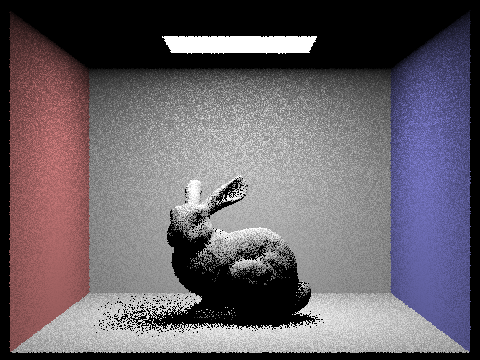
|
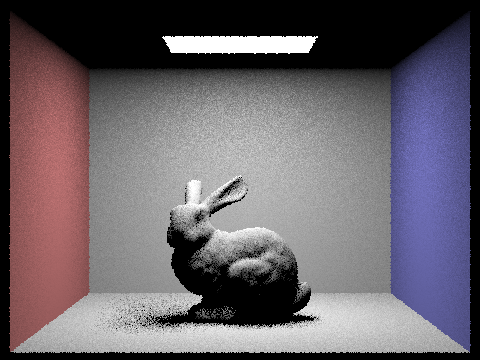
|
|
|
|
As shown above, the light importance sampling method is much smoother yet still has that grainy look in soft shadows like the top of the walls and the bunny's shadow. It is more noticeable with less light rays, but having more light rays takes a longer time to render the scene.
It was challenging figuring out how all the different rays and interesections work together and how we would sample, but after reading piazza and the spec for longer periods of times, we were able to figure it out. An area we got stuck on was that our images appeared dimmer than expected, which was resolved from an improper calculation and extra division.
Part 4: Global Illumination
In this section, we set on the goal to achieve global illumination. This is the peak potential with path tracing. Indirect lighting is where light is reflected off our other surfaces. We are taksed to calculate the light bouncing based on some probability, which involved the Russian roulette random sampling. The function we build is est_radiance_global_illumination and it gives an estimate of the total radiance from a given direction. First, it calls zero_bounce_radiance(), then it calls at_least_one_bounce_radiance() in order to accumulate light.
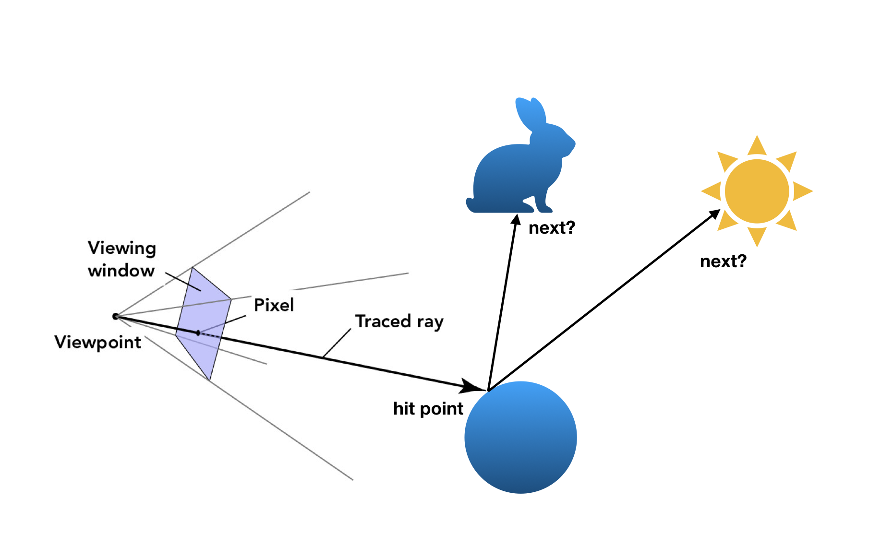
For the at_least_one_bounce function, we basically initalized the light from one_bounce_radiance, then took a sample from the BSDF surface (defines our w_in from our w_out), perform one bounce, and then use the russian roulette random sampling with a termination probability of .35 (the complement of this is the continuation probability). If we can proceed with more light bounces, we still needed to confirm that there was sufficient depth, our angle was correct, and that there was indirect illumination. If the newly created ray intersects with the bvh then we get the radiance along the ray and recursively call at_least_one_bounce_radiance() on it. The algorithm is inuitive and we limit bounces with max ray depth (set when we generate a ray).
We also luckily didn't have too much trouble in this part -- only slight debugging to make sure all of our calculations were correct, but we felt the spec was straight forward enough. Rendering all the images was a bit painful though.
|
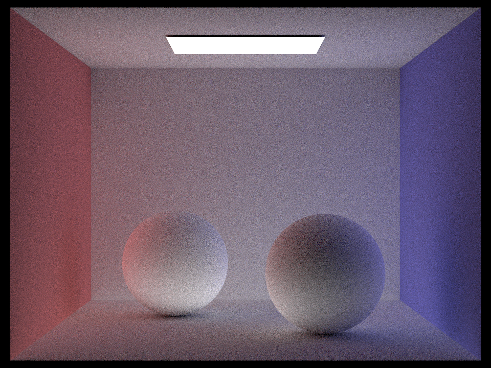
|
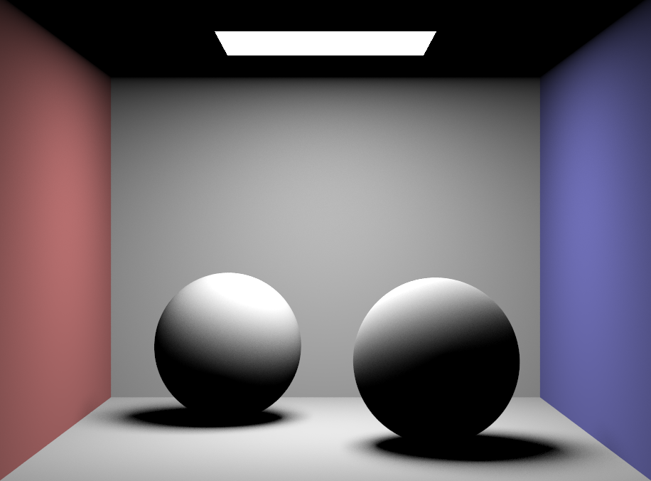
|
|
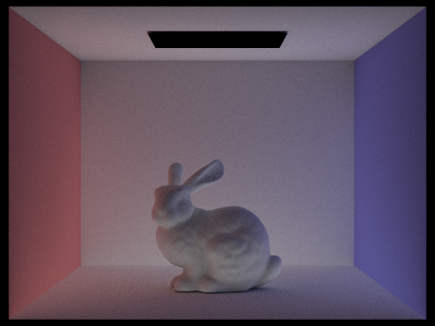
|
|
Comparing CBbunny.dae with different max depths
|
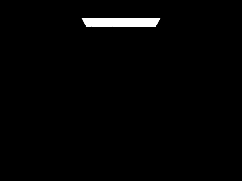
|
|
|
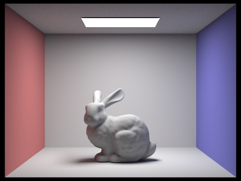
|
|
|
|
|
Comparing sphere scene with different sample-per-pixel rates
|
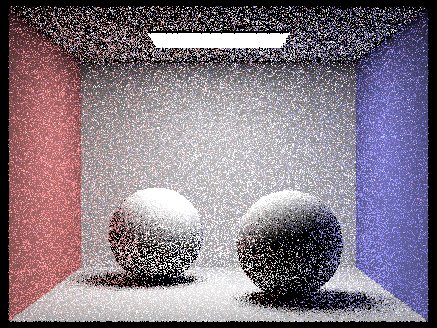
|
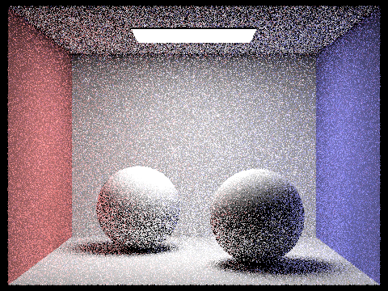
|
|
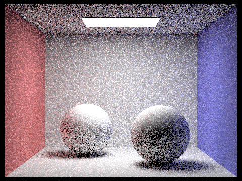
|
|
|
|
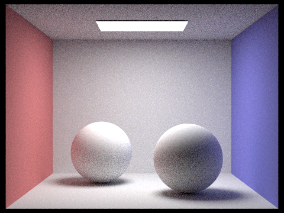
|
|
|
|
Part 5: Adaptive Sampling
In this section we implemented adaptive sampling. Ultimately,
this reduces the amount of time we spend on certain areas; however, this does not mean
that we use the "saved" time on other areas as if we didn't.
Thus, this just saves us time and samples. How adaptive sampling works is to spend less time on less complicated parts of the image- we calculate how quickly a pixel converges to adjust the sampling rate by using the following formula.
I <= max_tolerance * μ where μ = (1 / (n - 1)) * (s_2^2 - (s_1^2 / n)) and I = 1.96 * sqrt(variance) / sqrt(num_samples)
The spec was pretty clear and had a simple algorithm. We were also told to keep track of and s1 and s2 value that we just append to in order to calculate our variance.
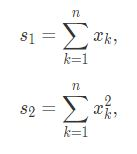
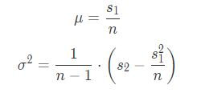
We really just need to add onto our original code in raytrace_pixel() to end our loop over samples early if we have a 95% confidence (thus 1.96 in the code above) that we are correct in our calculation for the ray so far. This calculation occurs every samplesPerBatch and is tested against some maxTolerance passed in. If our I value is greater than our cutoff value, we would simply terminate the loop early.Below are heatmaps indicating which regions have low sampling rates (in blue) and which have higher sampling rates (in red). The images below have been produced using 8 threads, 2048 samples per pixel, adapative sampling (samplesPerBatch = 64, maxTolerance = 0.05) , 1 sample per light and 5 max ray depth with a 480x360 size.
Sample code for bunny render:
./pathtracer -t 8 -s 2048 -a 64 0.05 -l 1 -m 5 -r 480 360 -f bunny.png ../dae/sky/CBbunny.dae
|
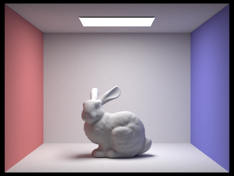
|
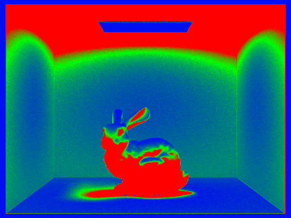
|
|
|
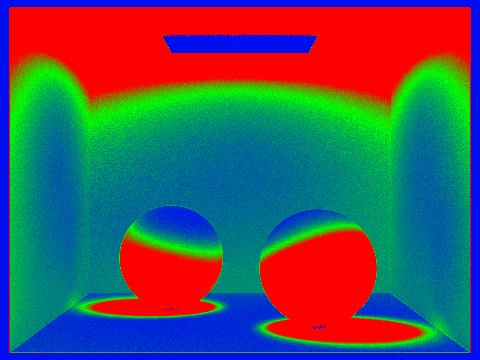
|
|
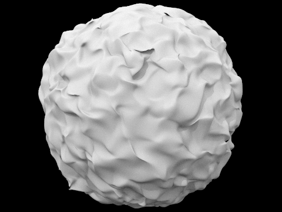
|
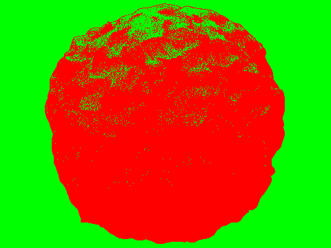
|
We didn't have too much trouble with this part; although I had to do some slight debugging in order to get all the numbers working. We had some isseus with the loop ending earlier than expected because some values were not type casted to be a float. I also accidentally wrote over some variables. One concern we did have though was the heatmap provided by the spec had green around the light source at the top, which ours did not have. We believe this issue is either from a small part in part 3 or 4 or due to random probability. However, this concern did not affect our normal rendering compared to the spec.
Collaboration
We have worked together for various technical projects in the past and we both learned so much from this project especially! We were able to collaborate effectively by peer programming and debugging together, as well as collaborating on the writeup and using our computers to render. We also posted on Piazza when running into errors we both struggled with.